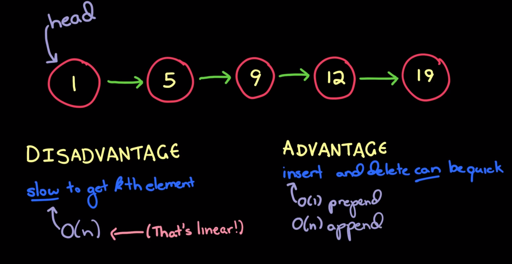

Linked List
What is Linked List?
Linked List is a list of nodes connected together in a single line. Single and Double linked list varies in ways of accessing nodes.
In Single linked list, each node will only have reference to next node where as in double linked list have always reference to next node & prev node as well like shown in below picture.
To function correctly, Linked list should always know the HEAD node to TAIL nodes. It keeps these HEAD and TAIL nodes as pointers and with pointers help, it will append/remove a node at the HEAD and TAIL positions.
What is a Linked List in
Gayle words in
Youtube

Each node is an javascript object with value,nextNode,prevNode.
Usage: We will append/remove the nodes at HEAD/TAIL position using linked list. Also, we can search the nodes using o(n) which traverse in linear mode.
Here we used addToHead,addToTail,removeHead,removeTail,search and indexOf functions to insert/remove/search values in linkedlist. Detailed explaination is added via comments in code.
Big O is a notation is use to classify how scalable an algorithm or function is.allow to estimate the worstcase of run time of an algorithm or how long it takes the algorithm to complete based on the input size.
So, big O informs us how much slower algorithm will run if input size grows. It describes how performant an algorithm or function is
Linked List Source Code
Please check the console to see the output